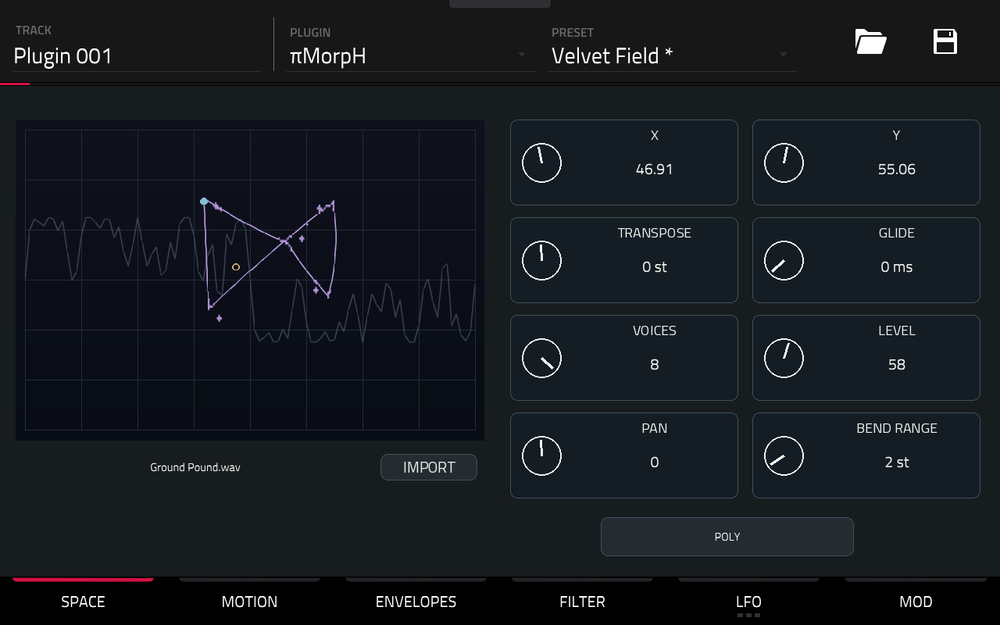
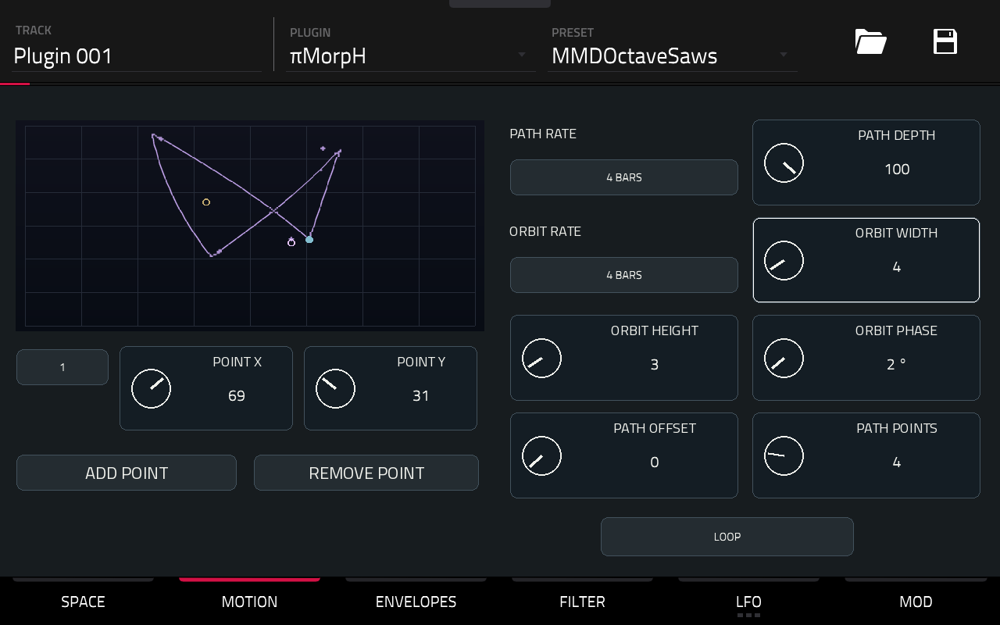
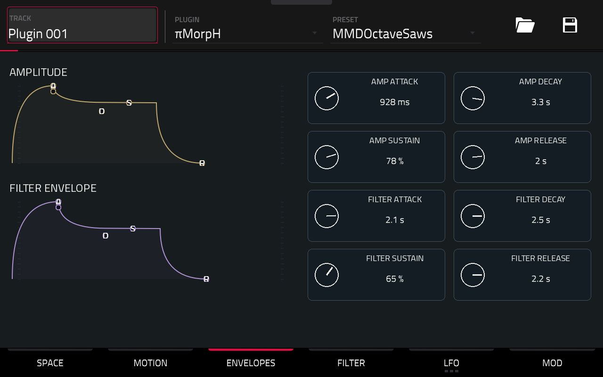
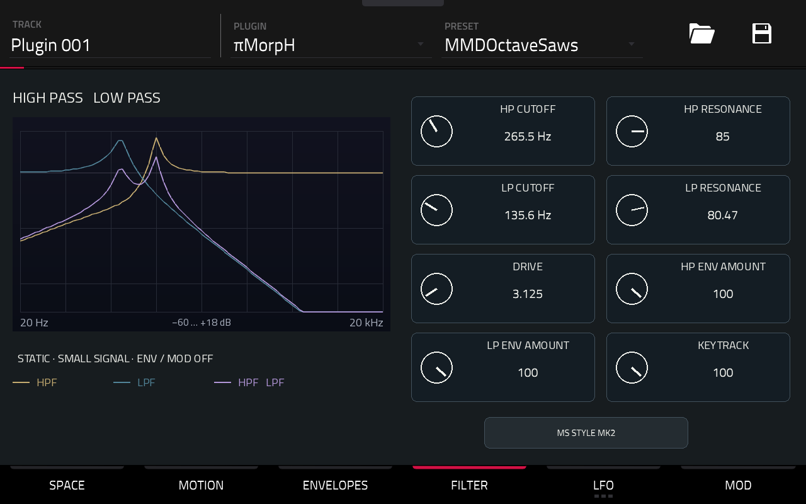
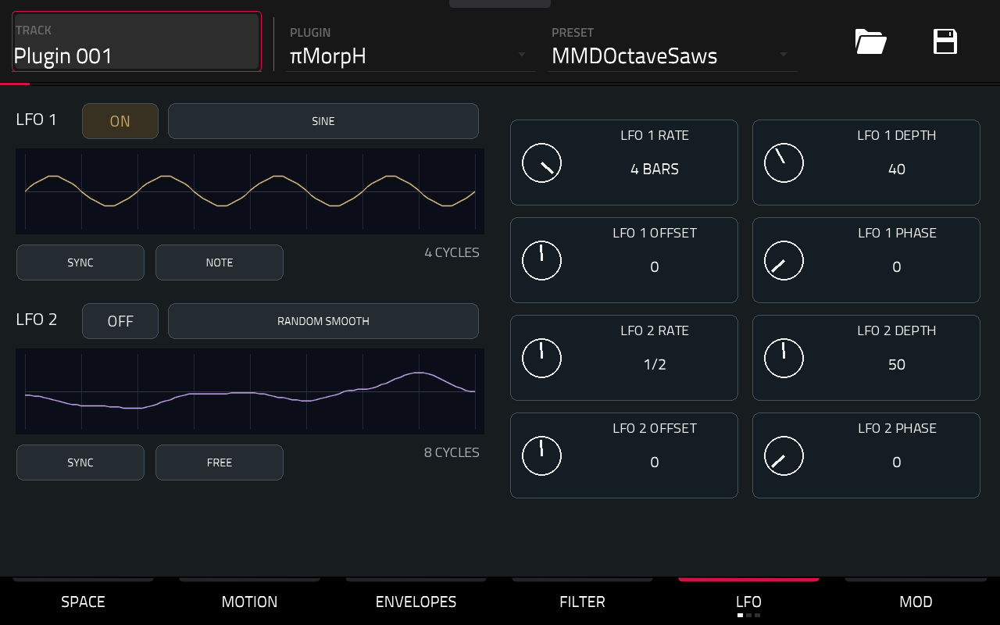
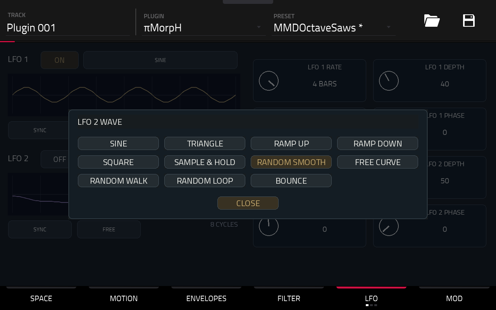
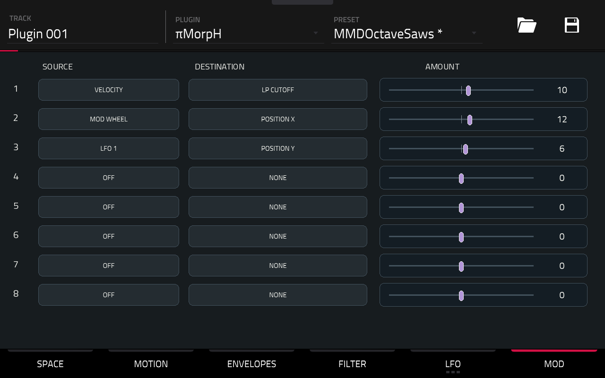

Choisis un son. Joue une note. Fais voyager son timbre.
πMorpH est un synthétiseur polyphonique à tables d’ondes. Chaque voix explore un espace XY, suit un trajet et une orbite, puis traverse deux filtres. Enveloppes et LFO donnent vie à l’ensemble.
Ce guide décrit la version 0.1.2 candidate, Force Gen1 / ARM32, avec 100 sons paramétrés + INIT.
Charge πMorpH sur une piste Plugin.
Ouvre PRESET, en haut à droite, et choisis un son. Les familles proposées vont des basses aux nappes, plucks, leads, textures et claviers. INIT, en fin de liste, offre un départ simple.
Joue les pads ou lance une séquence de notes. Pour entendre évoluer une nappe, maintiens un accord.
Commence par X / Y dans SPACE. Passe ensuite à MOTION pour mettre le timbre en mouvement.
Les sélecteurs ouvrent un panneau compact. Le choix actif est doré ; CLOSE ferme le panneau sans changer le choix. Le sélecteur d’ouverture devient jaune pendant l’ouverture, parfois derrière le panneau.
Touche un réglage puis tourne la molette, ou utilise les Q-Links affectés à la page.
Les captures montrent le skin sur la Force avant le changement de banque ; les noms de presets affichés appartiennent à la banque privée précédente.

X / Y placent l’origine dans la table. Entre les positions, les formes d’ondes se mélangent progressivement.
Le dessin aide à se repérer :
Pendant une manipulation, le repère d’origine bouge sans reconstruire tout le dessin. Après l’arrêt, Processing… accompagne brièvement sa préparation, puis le nouveau tracé apparaît complet.
TRANSPOSE change le registre, de −24 à +24 demi-tons.
GLIDE fait glisser la hauteur entre les notes lorsqu’une voix est réutilisée. Essaie-le en MONO ou LEGATO.
VOICES limite la polyphonie à 1–8 voix. LEVEL règle le volume ; PAN, le panoramique ; BEND RANGE, l’étendue du pitch bend.
Le bouton du bas choisit le jeu :
Dans SPACE, touche IMPORT, puis choisis un WAV sur DISKS ou USER. Premier appui : validation, VALID en vert, sans changer le son. Second appui sur le même fichier : LOADING en vert, puis fermeture du panneau. Une erreur apparaît en rouge avec ERROR : ; la table actuelle reste chargée.
1 à 256 formes avec métadonnées de cycles cohérentes, de 512, 1 024 ou 2 048 échantillons chacune. WAV PCM 16 bits, PCM 32 bits ou flottant 32 bits, mono ou stéréo.
La taille des formes est reconnue automatiquement. La stéréo est moyennée en mono ; le niveau est normalisé en mémoire. La fréquence indiquée dans le WAV ne change pas la hauteur de l’oscillateur.
Tes réglages restent en place. En cas d’échec, la table actuelle reste chargée.
Le preset et le projet mémorisent le chemin du WAV : conserve-le au même endroit. Le fichier d’origine n’est jamais modifié.

Le déplacement commence avec chaque nouvelle voix. Sa durée suit le tempo de la Force.
Le bouton du bas choisit le parcours :
PATH RATE règle la durée d’un aller : de 1/16 à 4 BARS. En PING-PONG, le retour prend la même durée.
PATH DEPTH dose l’écart du trajet autour de XY. À zéro, le trajet ne déplace plus le son. PATH OFFSET décale son point de départ dans le parcours.
Une orbite elliptique s’ajoute au trajet :
ORBIT RATE règle sa période.
ORBIT WIDTH / HEIGHT règlent sa largeur et sa hauteur. Mets les deux à zéro pour la retirer.
ORBIT PHASE décale son départ.
Pour construire le trajet, ouvre le sélecteur numéroté, choisis un point et ajuste POINT X / Y. ADD POINT / REMOVE POINT modifient leur nombre ; PATH POINTS le règle directement, entre 2 et 12.
Les positions restent dans les limites de l’espace XY. Le dessin montre un aperçu du parcours, pas les huit voix en temps réel.

Deux enveloppes indépendantes par voix.
AMPLITUDE façonne le volume.
FILTER ENVELOPE anime les coupures, selon les quantités réglées dans FILTER.
Pour chacune :
Pour un pluck : attaque courte, sustain bas, decay court.
Pour une nappe : attaque et release plus longs.
Les courbes servent de repères de réglage ; leur dessin n’est pas une mesure audio de l’enveloppe.

Le son traverse HP → LP : passe-haut, puis passe-bas.
HP CUTOFF retire le grave ; LP CUTOFF referme l’aigu. Les deux RESONANCE accentuent la zone de coupure.
DRIVE pousse l’entrée des filtres.
HP ENV AMOUNT / LP ENV AMOUNT appliquent l’enveloppe de filtre. Une valeur négative inverse son action.
KEYTRACK fait suivre les coupures à la hauteur des notes.
Le bouton du bas propose BYPASS, MS STYLE MK1 et MS STYLE MK2. En BYPASS, la chaîne de filtres et son drive sont contournés.
Les courbes séparent HPF doré, LPF bleu et réponse combinée violette. C’est une réponse statique autour du silence : elle ne représente pas les variations dues aux enveloppes, aux modulations ou à la saturation.

Deux LFO, à connecter dans MOD. ON devient doré lorsqu’un LFO est actif.
Choisis la forme :

SINE, TRIANGLE, RAMP UP, RAMP DOWN, SQUARE pour les mouvements réguliers.
SAMPLE & HOLD, RANDOM SMOOTH, RANDOM WALK, RANDOM LOOP pour le hasard, par paliers ou plus souple.
FREE CURVE pour une courbe personnalisée ; BOUNCE pour les rebonds.
HZ / SYNC choisit une vitesse libre ou une division synchronisée au tempo.
RATE règle la vitesse. DEPTH dose le signal du LFO ; OFFSET le décale ; PHASE déplace son départ.
FREE laisse tourner le LFO. En SYNC/FREE, il suit la position du transport.
NOTE redémarre sa phase à chaque nouvelle note déclenchée ; les notes liées en LEGATO ne le redéclenchent pas. Les LFO sont partagés par les voix.
L’aperçu montre 4 cycles pour les formes régulières, 8 cycles pour les formes aléatoires. Il décrit le signal, pas une tête de lecture animée.
Les sous-pages LFO 1 SHAPE / LFO 2 SHAPE, accessibles depuis la navigation LFO, donnent les réglages particuliers et les huit points de FREE CURVE : largeur du carré, pas de RANDOM WALK, longueur/évolution de RANDOM LOOP, gravité/rebond de BOUNCE.
Un LFO allumé sans routage dans MOD ne change pas le son.

Huit lignes : SOURCE → DESTINATION → AMOUNT.
Choisis une source, une destination, puis déplace le slider. Une quantité négative inverse l’action. AMOUNT 0, SOURCE OFF ou DESTINATION NONE neutralise la ligne.
Sources : LFO 1/2, AMP ENV, FILTER ENV, VELOCITY, NOTE, MOD WHEEL, PRESSURE.
Destinations : POSITION X/Y, PATH RATE, ORBIT RATE/WIDTH/HEIGHT, PITCH, HP/LP CUTOFF, HP/LP RESONANCE, AMPLITUDE, PAN.
Essaie :
LFO 1 → POSITION Y → 6 pour un mouvement discret.
VELOCITY → LP CUTOFF → 10 pour ouvrir le son avec le jeu.
MOD WHEEL → POSITION X → 12 pour explorer le timbre à la molette de modulation.
Les lignes visant la même destination s’additionnent. AMOUNT est une profondeur de modulation, pas une valeur directe en Hz ou en demi-tons.
Le menu PRESET contient 100 sons différenciés + INIT, construits à partir des 100 tables fournies. Velvet Field est le premier preset, avec les réglages sauvegardés sur la Force. Chaque son possède ses propres réglages.
Utilise la sauvegarde native de la Force pour conserver un preset ou ton projet. La table choisie et les réglages musicaux sont mémorisés ensemble.
Le format et la restitution des états sont testés sur PC. Le cycle complet de sauvegarde/réouverture de cette nouvelle banque par le menu natif reste à confirmer sur la Force.
Pour repartir simplement : charge INIT, joue une note et explore X / Y.